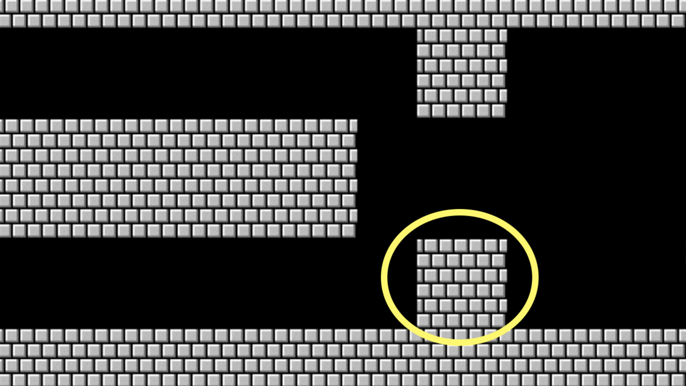

Lecture 6
- Welcome!
- Python
- Hello
- Speller
- Filter
- CS50 Library
- Strings
- Variables
- Types
- Calculator
- Conditionals
- Object-Oriented Programming
- Loops
- Abstraction
- Truncation and Floating Point Imprecision
- Exceptions
- Mario
- Lists
- Searching and Dictionaries
- Command-Line Arguments
- Exit Status
- Third-Party Libraries
- Summing Up
Welcome!
- In previous weeks, you were introduced to the fundamental building blocks of programming.
- You learned about programming in a lower-level programming language called C.
- Today, we are going to work with a higher-level programming language called Python.
- As you learn this new language, you’re going to find that you are going to be more able to teach yourself new programming languages.
Python
- Humans, over the decades, have seen how previous design decisions could be improved upon.
- Python is a programming language that builds upon what you have already learned in C.
- Unlike in C, Python is an interpreted language, where you need not separately compile your program. Instead, you run your program in the Python Interpreter.
Hello
-
Up until this point, the code has looked like this:
// A program that says hello to the world #include <stdio.h> int main(void) { printf("hello, world\n"); } - Today, you’ll find that the process of writing and compiling code has been simplified.
-
For example, the above code will be rendered in Python as:
# A program that says hello to the world print("hello, world")Notice that the semicolon is gone and that no library is needed.
- Python notably can implement what was quite complicated in C with relative simplicity.
Speller
-
To illustrate this simplicity, let’s type ‘code dictionary.py’ in the terminal window and write code as follows:
# Words in dictionary words = set() def check(word): """Return true if word is in dictionary else false""" return word.lower() in words def load(dictionary): """Load dictionary into memory, returning true if successful else false""" with open(dictionary) as file: words.update(file.read().splitlines()) return True def size(): """Returns number of words in dictionary if loaded else 0 if not yet loaded""" return len(words) def unload(): """Unloads dictionary from memory, returning true if successful else false""" return TrueNotice that there are four functions above. In the
checkfunction, if awordis inwords, it returnsTrue. So much easier than an implementation in C! Similarly, in theloadfunction the dictionary file is opened. For each line in that file, we add that line towords. Usingrstrip, the trailing new line is removed from the added word.sizesimply returns thelenor length ofwords.unloadonly needs to returnTruebecause Python handles memory management on its own. - The above code illustrates why higher-level languages exist: To simplify and allow you to write code more easily.
- However, speed is a tradeoff. Because C allows you, the programmer, to make decisions about memory management, it may run faster than Python – depending on your code. While C only runs your lines of code, Python runs all the code that comes under the hood with it when you call Python’s built-in functions.
- You can learn more about functions in the Python documentation
Filter
-
To further illustrate this simplicity, create a new file by typing
code blur.pyin your terminal window and write code as follows:# Blurs an image from PIL import Image, ImageFilter # Blur image before = Image.open("bridge.bmp") after = before.filter(ImageFilter.BoxBlur(1)) after.save("out.bmp")Notice that this program imports modules
ImageandImageFilterfrom a library calledPIL. This takes an input file and creates and output file. -
Further, you can create a new file called
edges.pyas follows:# Finds edges in an image from PIL import Image, ImageFilter # Find edges before = Image.open("bridge.bmp") after = before.filter(ImageFilter.FIND_EDGES) after.save("out.bmp")Notice that this code is a small adjustment to your
blurcode, but produces a dramatically different result. -
Finally, you can even do face detection as follows:
# Find faces in picture # https://github.com/ageitgey/face_recognition/blob/master/examples/find_faces_in_picture.py from PIL import Image import face_recognition # Load the jpg file into a numpy array image = face_recognition.load_image_file("office.jpg") # Find all the faces in the image using the default HOG-based model. # This method is fairly accurate, but not as accurate as the CNN model and not GPU accelerated. # See also: find_faces_in_picture_cnn.py face_locations = face_recognition.face_locations(image) for face_location in face_locations: # Print the location of each face in this image top, right, bottom, left = face_location # You can access the actual face itself like this: face_image = image[top:bottom, left:right] pil_image = Image.fromarray(face_image) pil_image.show()Notice how this file uses a third-party library called face_recognition. This is enabled by running
pip install face_recognitionin one’s terminal window. -
Python allows you to abstract away programming that would be much more complicated within C and other lower-level programming languages.
CS50 Library
- As with C, the CS50 library can be utilized within Python.
-
The following functions will be of particular use:
get_float get_int get_string -
You also have the option of importing only specific functions from the CS50 library as follows:
from CS50 import get_float, get_int, get_string
Strings
-
In C, you might remember this code:
// get_string and printf with %s #include <cs50.h> #include <stdio.h> int main(void) { string answer = get_string("What's your name? "); printf("hello, %s\n", answer); } -
This code is transformed in Python to:
# get_string and print, with concatenation from cs50 import get_string answer = get_string("What's your name? ") print("hello, " + answer)You can write this code by executing
code hello.pyin the terminal window. Then, you can execute this code by runningpython hello.py. Notice how the+sign concatenates"hello, "andanswer. -
Similarly, you could implement the above code as:
# get_string and print, with format strings from cs50 import get_string answer = get_string("What's your name? ") print(f"hello, {answer}")Notice how the curly braces allow for the
printfunction to interpolate theanswersuch thatanswerappears within. Thefis required to include theanswerproperly formatting.
Variables
- Variable declaration is simplified too. In C, you might have
int counter = 0;. In Python, this same line would readcounter = 0. You need not declare the type of the variable. - Python favors
counter += 1to increment by one, losing the ability found in C to typecounter++.
Types
- Data types in Python do not need to be explicitly declared. For example, you saw how
answerabove is a string, but we did not have to tell the interpreter this was the case: It knew on its own. -
In Python, commonly used types include:
bool float int strNotice that
longanddoubleare missing. Python will handle what data type should be used for larger and smaller numbers. -
Some other data types in Python include:
range list tuple dict set - Each of these data types can be implemented in C, but in Python they can be implemented more simply.
Calculator
-
You might recall
calculator.cfrom earlier in the course:// Addition with int #include <cs50.h> #include <stdio.h> int main(void) { // Prompt user for x int x = get_int("x: "); // Prompt user for y int y = get_int("y: "); // Perform addition printf("%i\n", x + y); } -
We can implement a simple calculator just as we did within C. Type
code calculator.pyinto the terminal window and write code as follows:# Addition with int [using get_int] from cs50 import get_int # Prompt user for x x = get_int("x: ") # Prompt user for y y = get_int("y: ") # Perform addition print(x + y)Notice how the CS50 library is imported. Then,
xandyare gathered from the user. Finally, the result is printed. Notice that themainfunction that would have been seen in a C program is gone entirely! While one could utilize amainfunction, it is not required. -
It’s possible for one to remove the training wheels of the CS50 library. Modify your code as follows:
# Addition with int [using input] # Prompt user for x x = input("x: ") # Prompt user for y y = input("y: ") # Perform addition print(x + y)Notice how executing the above code results in strange program behavior. Why might this be so?
-
You may have guessed that the interpreter understood
xandyto be strings. You can fix your code by employing theintfunction as follows:# Addition with int [using input] # Prompt user for x x = int(input("x: ")) # Prompt user for y y = int(input("y: ")) # Perform addition print(x + y)Notice how the input for
xandyis passed to theintfunction which converts it to an integer. Without convertingxandyto be integers, the characters will concatenate.
Conditionals
-
In C, you might remember a program like this:
// Conditionals, Boolean expressions, relational operators #include <cs50.h> #include <stdio.h> int main(void) { // Prompt user for integers int x = get_int("What's x? "); int y = get_int("What's y? "); // Compare integers if (x < y) { printf("x is less than y\n"); } else if (x > y) { printf("x is greater than y\n"); } else { printf("x is equal to y\n"); } } -
In Python, it would appear as follows:
# Conditionals, Boolean expressions, relational operators from cs50 import get_int # Prompt user for integers x = get_int("What's x? ") y = get_int("What's y? ") # Compare integers if x < y: print("x is less than y") elif x > y: print("x is greater than y") else: print("x is equal to y")Notice that there are no more curly braces. Instead, indentations are utilized. Second, a colon is utilized in the
ifstatement. Further,elifreplaceselse if. Parentheses are also no longer required in theifandelifstatements. -
In C, we faced challenges when we wanted to compare two values. Consider the following code:
// Conditionals, Boolean expressions, relational operators #include <cs50.h> #include <stdio.h> int main(void) { // Prompt user for integers int x = get_int("What's x? "); int y = get_int("What's y? "); // Compare integers if (x < y) { printf("x is less than y\n"); } else if (x > y) { printf("x is greater than y\n"); } else { printf("x is equal to y\n"); } } -
In Python, we can execute the above as follows:
# Conditionals, Boolean expressions, relational operators from cs50 import get_int # Prompt user for integers x = get_int("What's x? ") y = get_int("What's y? ") # Compare integers if x < y: print("x is less than y") elif x > y: print("x is greater than y") else: print("x is equal to y")Notice that the CS50 library is imported. Further, minor changes exist in the
ifstatement. -
Further looking at comparisons, consider the following code in C:
// Logical operators #include <cs50.h> #include <stdio.h> int main(void) { // Prompt user to agree char c = get_char("Do you agree? "); // Check whether agreed if (c == 'Y' || c == 'y') { printf("Agreed.\n"); } else if (c == 'N' || c == 'n') { printf("Not agreed.\n"); } } -
The above can be implemented as follows:
# Logical operators from cs50 import get_string # Prompt user to agree s = get_string("Do you agree? ") # Check whether agreed if s == "Y" or s == "y": print("Agreed.") elif s == "N" or s == "n": print("Not agreed.")Notice that the two vertical bars utilized in C is replaced with
or. Indeed, people often enjoy Python because it is more readable by humans. Also, notice thatchardoes not exist in Python. Instead,strs are utilized. -
Another approach to this same code could be as follows using lists:
# Logical operators, using lists from cs50 import get_string # Prompt user to agree s = get_string("Do you agree? ") # Check whether agreed if s in ["y", "yes"]: print("Agreed.") elif s in ["n", "no"]: print("Not agreed.")Notice how we are able to express multiple keywords like
yandyesin alist.
Object-Oriented Programming
- Up until this point, our programs in this course have been linear: sequential.
- It’s possible to have certain types of values not only have properties or attributes inside of them but have functions as well. In Python, these values are known as objects
- In C, we could create a
structwhere you could associate multiple variables inside a single self-created data type. In Python, we can do this and also include functions in a self-created data type. When a function belongs to a specific object, it is known as a method. -
For example,
strsin Python have a built-in methods. Therefore, you could modify your code as follows:# Logical operators, using lists from cs50 import get_string # Prompt user to agree s = get_string("Do you agree? ").lower() # Check whether agreed if s.lower() in ["y", "yes"]: print("Agreed.") elif s.lower() in ["n", "no"]: print("Not agreed.")Notice how the old value of
sis overwritten with the result ofs.lower(), a built-in method ofstrs. - In this class, we will only scratch the surface of Python. Therefore, the Python documentation will be of particular importance as you continue.
- You can learn more about string methods in the Python documentation
Loops
-
Loops in Python are very similar to C. You may recall the following code in C:
// Demonstrates while loop #include <stdio.h> int main(void) { int i = 0; while (i < 3) { printf("meow\n"); i++; } } -
In Python, this code appears as:
# Demonstrates while loop i = 0 while i < 3: print("meow") i += 1 -
forloops can be implemented in Python as follows:# Better design for i in range(3): print("meow")Notice that
iis never explicitly used. However, Python will increment the value ofi. -
Similarly, one could express the above code as:
# Abstraction with parameterization def main(): meow(3) # Meow some number of times def meow(n): for i in range(n): print("meow") main()Notice that a function is utilized to abstract away the meowing.
-
Finally, a
whileloop could be implemented as follows:# Demonstrates while loop i = 0 while i < 3: print("meow") i += 1 -
To further our understanding of loops and iteration in Python, let’s create a new file called
uppercase.pyas follows:# Uppercases string one character at a time before = input("Before: ") print("After: ", end="") for c in before: print(c.upper(), end="") print()Notice how
end=is used to pass a parameter to theprintfunction that continues the line without a line ending. This code passes one string at a time. -
Reading the documentation, we discover that Python has methods that can be implemented upon the entire string as follows:
# Uppercases string all at once before = input("Before: ") after = before.upper() print(f"After: {after}")Notice how
.upperis applied to the entire string.
Abstraction
-
As we hinted at earlier today, you can further improve upon our code using functions and abstracting away various code into functions. Modify your earlier-created
meow.pycode as follows:# Abstraction def main(): for i in range(3): meow() # Meow once def meow(): print("meow") main()Notice that the
meowfunction abstracts away theprintstatement. Further, notice that themainfunction appears at the top of the file. At the bottom of the file, themainfunction is called. By convention, it’s expected that you create amainfunction in Python. -
Indeed, we can pass variables between our functions as follows:
# Abstraction with parameterization def main(): meow(3) # Meow some number of times def meow(n): for i in range(n): print("meow") main()Notice how
meownow takes a variablen. In themainfunction, you can callmeowand pass a value like3to it. Then,meowutilizes the value ofnin theforloop. -
Reading the above code, notice how you, as a C programmer, are able to quite easily make sense of the above code. While some conventions are different, the building blocks you previously learned are very apparent in this new programming language.
Truncation and Floating Point Imprecision
- Recall that in C, we experienced truncation where one integer being divided by another could result in an inprecise result.
-
You can see how Python handles such division as follows by modifying your code for
calculator.py:# Division with integers, demonstration lack of truncation # Prompt user for x x = int(input("x: ")) # Prompt user for y y = int(input("y: ")) # Divide x by y z = x / y print(z)Notice that executing this code results in a value, but that if you were to see more digits after
.333333you’d see that we are faced with floating-point imprecision. Truncation does not occur. -
We can reveal this imprecision by modifying our codes slightly:
# Floating-point imprecision # Prompt user for x x = int(input("x: ")) # Prompt user for y y = int(input("y: ")) # Divide x by y z = x / y print(f"{z:.50f}")Notice that this code reveals the imprecision. Python still faces this issue, just as C does.
Exceptions
- Let’s explore more about exceptions that can occur when we run Python code.
-
Modify
calculator.pyas follows:# Implements get_int def get_int(prompt): return int(input(prompt)) def main(): # Prompt user for x x = get_int("x: ") # Prompt user for y y = get_int("y: ") # Perform addition print(x + y) main()Notice that inputting the wrong data could result in an error.
-
We can
tryto handle and catch potential exceptions by modifying our code as follows:# Implements get_int with a loop def get_int(prompt): while True: try: return int(input(prompt)) except ValueError: print("Not an integer") def main(): # Prompt user for x x = get_int("x: ") # Prompt user for y y = get_int("y: ") # Perform addition print(x + y) main()Notice that the above code repeatedly tries to get the correct type of data, providing additional prompts when needed.
Mario
-
Recall a few weeks ago our challenge of building three blocks on top of one another, like in Mario.
-
In Python, we can implement something akin to this as follows:
# Prints a column of 3 bricks with a loop for i in range(3): print("#") -
In C, we had the advantage of a
do-whileloop. However, in Python it is convention to utilize awhileloop, as Python does not have ado whileloop. You can write code as follows in a file calledmario.py:# Prints a column of n bricks with a loop from cs50 import get_int while True: n = get_int("Height: ") if n > 0: break for i in range(n): print("#")Notice how the while loop is used to obtain the height. Once a height greater than zero is inputted, the loop breaks.
-
Consider the following image:

-
In Python, we could implement by modifying your code as follows:
# Prints a row of 4 question marks with a loop for i in range(4): print("?", end="") print()Notice that you can override the behavior of the
printfunction to stay on the same line as the previous print. -
Similar in spirit to previous iterations, we can further simplify this program:
# Prints a row of 4 question marks without a loop print("?" * 4)Notice that we can utilize
*to multiply the print statement to repeat4times. -
What about a large block of bricks?

-
To implement the above, you can modify your code as follows:
# Prints a 3-by-3 grid of bricks with loops for i in range(3): for j in range(3): print("#", end="") print()Notice how one
forloop exists inside another. Theprintstatement adds a new line at the end of each row of bricks. -
You can learn more about the
printfunction in the Python documentation
Lists
lists are a data structure within Python.lists have built in methods or functions within them.-
For example, consider the following code:
# Averages three numbers using a list # Scores scores = [72, 73, 33] # Print average average = sum(scores) / len(scores) print(f"Average: {average}")Notice that you can use the built-in
summethod to calculate the average. -
You can even utilize the following syntax to get values from the user:
# Averages three numbers using a list and a loop from cs50 import get_int # Get scores scores = [] for i in range(3): score = get_int("Score: ") scores.append(score) # Print average average = sum(scores) / len(scores) print(f"Average: {average}")Notice that this code utilizes the built-in
appendmethod for lists. - You can learn more about lists in the Python documentation
- You can also learn more about
lenin the Python documentation
Searching and Dictionaries
- We can also search within a data structure.
-
Consider a program called
phonebook.pyas follows:# Implements linear search for names using loop # A list of names names = ["Carter", "David", "John"] # Ask for name name = input("Name: ") # Search for name for n in names: if name == n: print("Found") break else: print("Not found")Notice how this implements linear search for each name.
-
However, we don’t need to iterate through a list. In Python, we can execute linear search as follows:
# Implements linear search for names using `in` # A list of names names = ["Carter", "David", "John"] # Ask for name name = input("Name: ") # Search for name if name in names: print("Found") else: print("Not found")Notice how
inis used to implement linear search. - Still, this code could be improved.
- Recall that a dictionary or
dictis a collection of key and value pairs. -
You can implement a dictionary in Python as follows:
# Implements a phone book as a list of dictionaries, without a variable from cs50 import get_string people = [ {"name": "Carter", "number": "+1-617-495-1000"}, {"name": "David", "number": "+1-617-495-1000"}, {"name": "John", "number": "+1-949-468-2750"}, ] # Search for name name = get_string("Name: ") for person in people: if person["name"] == name: print(f"Found {person['number']}") break else: print("Not found")Notice that the dictionary is implemented having both
nameandnumberfor each entry. -
Even better, strictly speaking, we don’t need both a
nameand anumber. We can simplify this code as follows:# Implements a phone book using a dictionary from cs50 import get_string people = { "Carter": "+1-617-495-1000", "David": "+1-617-495-1000", "John": "+1-949-468-2750", } # Search for name name = get_string("Name: ") if name in people: print(f"Number: {people[name]}") else: print("Not found")Notice that the dictionary is implemented using curly braces. Then, the statement
if name in peoplesearches to see if thenameis in thepeopledictionary. Further, notice how, in theprintstatement, we can index into the people dictionary using the value ofname. Very useful! - Python has done their best to get to constant time using their built-in searches.
- You can learn more about dictionaries in the Python documentation
Command-Line Arguments
-
As with C, you can also utilize command-line arguments. Consider the following code:
# Prints a command-line argument from sys import argv if len(argv) == 2: print(f"hello, {argv[1]}") else: print("hello, world")Notice that
argv[1]is printed using a formatted string, noted by thefpresent in theprintstatement. -
You can print all the arguments in
argvas follows:# Printing command-line arguments, indexing into argv from sys import argv for i in range(len(argv)): print(argv[i])Notice that the above will not present the word
pythonif executed, and the first argument will be the name of the file you are running. You can think of the wordpythonas being analogous to./when we were running programs in C. -
You can slice pieces of lists away. Consider the following code:
# Printing command-line arguments from sys import argv for arg in argv: print(arg)Notice that executing this code will result in the name of the file you are running being sliced away.
-
You can learn more about the
syslibrary in the Python documentation
Exit Status
-
The
syslibrary also has built-in methods. We can usesys.exit(i)to exit the program with a specific exit code:# Exits with explicit value, importing sys import sys if len(sys.argv) != 2: print("Missing command-line argument") sys.exit(1) print(f"hello, {sys.argv[1]}") sys.exit(0)Notice that dot-notation is used to utilize the built-in functions of
sys.
Third-Party Libraries
- One of the advantages of Python is its massive user-base and similarly large number of third-party libraries.
- For example, David demoed the use of
cowsayandqrcodelibraries.
Summing Up
In this lesson, you learned how the building blocks of programming from prior lessons can be implemented within Python. Further, you learned about how Python allowed for more simplified code. Also, you learned how to utilize various Python libraries. In the end, you learned that your skills as a programmer are not limited to a single programming language. Already, you are seeing how you are discovering a new way of learning through this course that could serve you in any programming language – and, perhaps, in nearly any avenue of learning! Specifically, we discussed…
- Python
- Variables
- Conditionals
- Loops
- Types
- Object-Oriented programming
- Truncation and floating point imprecision
- Exceptions
- Dictionaries
- Command-line arguments
- Third-Party libraries
See you next time!